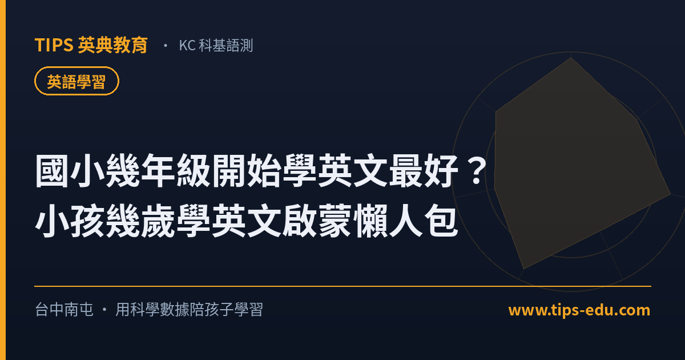

英語學習國小幾年級開始學英文最好？小孩幾歲學英文啟蒙懶人包
小孩幾歲學英文沒有單一正解：學齡前重「聽與感覺」、國小低年級是系統化啟蒙的好時機、中高年級才開始也完全來得及。比起搶快，更該在意方法是否適齡、孩子是否保有興趣與成就感。
「別人家小孩幼兒園就會講整句英文，我家還沒開始，是不是已經輸了？」這是許多台中南屯家長共同的焦慮。坊間訊息又常常互相矛盾——有人說越早越好、有人說太早反而排斥。到底小孩幾歲學英文才剛剛好？這篇用家長最關心的幾個角度，幫你把判斷標準一次理清楚。
小孩幾歲學英文？先看「語言發展」而不是年齡數字
幼兒對聲音的敏感度確實較高，學齡前大量接觸英文兒歌、繪本與簡單對話，有助於建立語感與發音基礎。但這個階段的重點是「聽得開心、敢開口」，而不是背單字或趕進度。換句話說，三、四歲可以開始「玩」英文，比較接近沉浸式的環境輸入，不等於正式上課。家長不必因為孩子還沒進補習班就緊張。
國小低年級：系統化啟蒙的好時機
到了國小一、二年級，孩子已具備基本的專注力與識字能力，開始能理解字母拼讀（phonics）、簡單句型與閱讀，是把零散語感轉成「可累積能力」的好階段。這時若有循序的分級教材與固定回饋，學習會比學齡前更有效率。對在地家長來說，台中南屯的選擇不少，可從孩子的興趣與作息出發，先了解我們的國小部課程規劃再決定形式。
中高年級才開始，會不會太晚？
不會。國小三年級以後的孩子，理解力、邏輯與耐心都更成熟，反而能在較短時間內吸收文法與閱讀架構。許多看似「起步晚」的孩子，只要找到對的方法與環境，往往能後來居上。真正會拖累學習的，不是年齡，而是用了不適齡的教材、或在挫折中失去信心。所以「幾歲開始」遠不如「怎麼開始」重要。
比起時機，這三件事更該在意
第一，孩子是否保有興趣與成就感；第二，教材是否分級、能對應到孩子目前的程度；第三，學習過程有沒有具體回饋，讓家長看得見進步。把這三點顧好，無論幾歲開始，英文都能走得穩。下一段，我們把這些原則對照成可檢視的實際做法。
這 4 點，TIPS 怎麼做到
這份清單，我們也拿來檢視自己。以下是 TIPS 英典教育對照本篇重點的實際做法——不是「什麼都能包」，而是「用這些標準要求自己」：
- 1先診斷再開始 入學前安排落點診斷，了解孩子目前的聽說讀寫與興趣傾向，再決定全美語或中師、團體或小班，不一刀切。
- 2分級閱讀打底 Lumos 英文閱讀採藍思分級，依孩子程度給適齡讀本，讓低、中、高年級都能在自己的位置往上走。
- 3看得見的回饋 KC 科基語測以 AI 雙語與個人語言模型（PLM）建立能力雷達圖，對應 CEFR A1～B1，讓家長清楚孩子的強弱項。
- 4因材施教 由創辦人 Bella 主任與 William 老師帶領，理念是「合適、多元、不設限」，依每個孩子的步調調整，而非趕一致進度。
常見問題
Q1：小孩幾歲開始學英文最好？
沒有絕對的黃金年齡。學齡前可用大量聽與唱建立語感，國小低年級是系統化啟蒙的好時機，中高年級才開始也完全來得及，重點是用對方法、維持正向經驗，而不是搶快。
Q2：太晚學英文會不會輸在起跑點？
不會。國小中高年級的孩子理解力與專注力更成熟，搭配適合的分級教材與循序進度，往往能在較短時間內趕上，關鍵在於是否找到能因材施教、給予回饋的學習環境。
Q3：在台中南屯想讓孩子開始學英文，第一步該做什麼？
建議先做一次落點診斷，了解孩子目前的聽說讀寫程度與興趣傾向，再依結果選擇全美語或中師、團體或小班的形式。TIPS 英典教育提供免費落點診斷，可預約後安排。